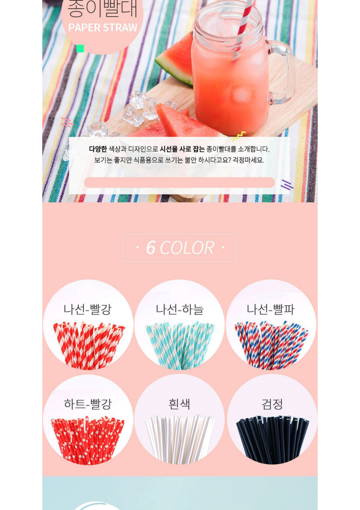

환경보호에 일조하는 작은 행동부터 시작하기
제품소개
: 플라스틱이 포함되지 않아 교체주기 없이 지속적인 사용이 가능한 세척솔이 필요없는 개방형 재사용 실리콘 빨대.
가격구성
기존 상세페이지 분석
: 제품의 장점, 환경을 위한 3R운동, 제품 사용 방법 사진과 영상
유사제품의 상세페이지 분석
: 별로 특별한 특징이 있는 부분은 없어보인다.

차별점 및 구매포인트
환경보호를 위한 실용적인 빨대, 기존 빨대의 세척방법의 불편함을 개선한 부분.
제작 기획안
1. 실리콘으로 제작한 빨대의 장점
2. 실리콘 빨대의 실용성
3. 5명의 빨대 사용 후기